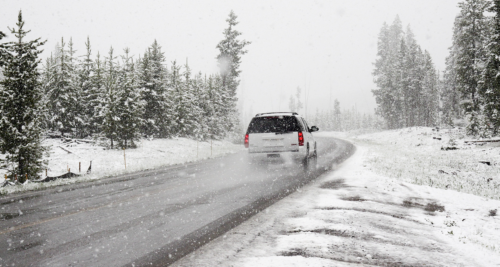

최고의 에어백은
안전속도
입니다.
속도를낮추면
더욱안전해 집니다.

겨울철
타이어점검은
필수입니다.
웹진보기 >
무료구독신청 >
| 공지사항에 대한 게시판 상세화면 입니다. 2022년 자동차운전전문학원 기능강사(2차) 자격시험 실시 공고(안내) |
|---|
| 2022. 8. 6.(토) 시행 기능강사(2차) 자격시험 공고(안내) 입니다. 자세한 내용은, 첨부파일 공고문 참조바랍니다. |
| 2022년 자동차운전전문학원 기능검정원 자격시험 실시 안내 |
| 2022. 5.28.(토) 실시되는 기능검정원 자격시험 실시 관련 안내입니다. 자세한 내용은, 첨부파일 `안내문` 및 `2022년도 자격시험 공고` 참조하시기 바랍니다. |
| TBN 한국교통방송 ‘사랑만큼 거리두기.. |
|---|
| ◎ 담당부서 : TBN한국교통방송 서울방송본부 차장대우 이지영 (02-3495-2014), 대리 이선영 (02-3495-2018) ◎ 언론담당 : 소통홍보처 |
| ‘자율주행시대의 새로운 법과 제도’ 학술.. |
| ◎ 담당부서 : 자율주행연구처 처장 윤진수 (033-749-5977), 책임연구원 김종갑 (033-749-5418) ◎ 언론담... |
| [미래사업추진처] 전문계약직(자율주행) 채.. |
| [충북지부]교통계약직(육아휴직 대체) 채용.. |
| [도봉시험장] 실무계약직(환경관리-실외청소.. |
| [본부] 전문계약직 다급(경찰청 교통단속관.. |
| TBN한국교통방송 오디오파일시스템 업그레이.. |
| 울산신청사 구내식당 운영위탁 |
| 2022년 도로교통공단 직원 역량강화 위탁.. |
| [변경공고]2022년 TBN방송종합(동산).. |